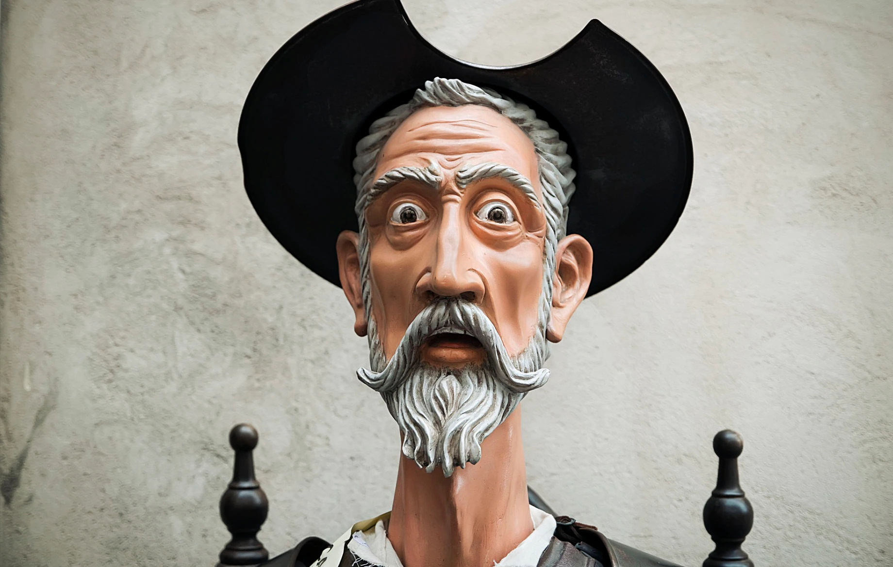

Literatura Favorita
by William Hernandez
Don Quijote de la Manchaa
Don Quijote de la Manchaa es una novela escrita por el español Miguel de Cervantes Saavedra.
Publicada su primera parte con el título de El ingenioso hidalgo don Quijote de la Mancha a comienzos de 1605,
es la obra más destacada de la literatura española y una de las principales de la literatura universal,
además de ser la más leída después de la Biblia.12 En 1615 apareció su continuación con el título de Segunda parte del ingenioso caballero don Quijote de la Mancha.
El Quijote de 1605 se publicó dividido en cuatro partes; pero al aparecer el Quijote de 1615 en calidad de Segunda parte de la obra,
quedó revocada de hecho la partición en cuatro secciones del volumen publicado diez años antes por Cervantes.

Ir a pagina index